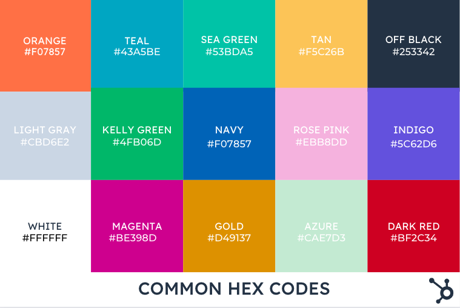

CSS Basics
CSS Syntax

CSS Selectors
CSS selectors are used to "find" (or select) the HTML elements you want to style.
We can divide CSS selectors into five categories:
- Simple selectors (select elements based on name, id, class)
- Combinator selectors (select elements based on a specific relationship between them)
- Pseudo-class selectors (select elements based on a certain state)
- Pseudo-elements selectors (select and style a part of an element)
- Attribute selectors (select elements based on an attribute or attribute value)
The basic CSS selectors:
- The element Selector
The element selector selects HTML elements based on the element name.
- Here's an example of how an element selector could like in CSS:
p { text-align: center; color: red; }
- Here's an example of how an element selector could like in CSS:
- Grouping Selector
The grouping selector selects all the HTML elements with the same style definitions.
- Here's an example of how a grouping selector could like in CSS:
h1, h2, p { text-align: center; color: red; }
- Here's an example of how a grouping selector could like in CSS:
CSS Comments
Comments are used to explain the code, and may help when you edit the source code at a later date.
Comments are ignored by browsers, that's why they are not displayed in the browser.
A CSS comment is placed inside the "style" element, and starts with "/*" and ends with "*/".
Here's an example of how a comment could like in CSS:
/* This is a single-line comment */
p {
color: red;
}
Colors
Color Names
Colors are specified using predefined color names, or RGB, HEX, HSL, RGBA, HSLA values.
In CSS, a color can be specified by using a predefined color name:
- Tomato
- Orange
- DodgerBlue
- MediumSeaGreen
- Gray
- SlateBlue
- Violet
- LightGray
- ...
Hexadecimal Colors
A hexadecimal color is specified with: #RRGGBB, where the RR (red),
GG (green) and BB (blue)
hexadecimal integers specify
the components of the color.
About hex values:
- In CSS, a color can be specified using a hexadecimal value in the form:
#rrggbb - Where rr (red), gg (green) and bb (blue) are
hexadecimal values
between 00 and ff (same as decimal 0-255). - To display black, set all values to 00, like this: #000000.
- To display white, set all values to ff, like this: #ffffff.
About the 3-digit hex value:
- The 3-digit hex code is a shorthand for some 6-digit hex codes.
- The 3-digit hex code has the following form:
#rgb - Where r, g, and b represent the red, green, and blue components with values between 0 and f.
- The 3-digit hex code can only be used when both the values (RR, GG, and BB) are the same
for each component. So, if we have #ff00cc, it can be written like this: #f0c.
Backgrounds
Background Color
The background-color property specifies the background color of an element.
The background color of a page can be set like this:
body {
background-color: lightblue;
}
Background Image
The background-image property specifies an image to use as the background of an element.
By default, the image is repeated, so it covers the entire element.
This is how you can set a background image for a page:
body {
background-image: url("paper.gif");
}
Background Image - Repeat and Position
About background-repeat:
- By default, the background-image property repeats an image both horizontally and vertically.
- Some images should be repeated only horizontally or vertically, or they will look strange
(a good example of how it will look if it was strange is already presented above): - If the image above is repeated only horizontally (background-repeat: repeat-x;), the background
will look better:body { background-image: url("gradient_bg.png"); background-repeat: repeat-x; } - To repeat an image vertically, set background-repeat: repeat-y;
- Showing the background image only once is also specified by the background-repeat property:
body { background-image: url("img_tree.png"); background-repeat: no-repeat; }
In the last example above, the background image is placed in the same place as the text. It is possible to change the position of the image, so that it does not disturb the text too much.
About background-position:
- The background-position property is used to specify the position of the background image.
- Here's an example where the background-image is placed in the top-right corner:
body { background-image: url("img_tree.png"); background-repeat: no-repeat; background-position: right top; }
Text
Text Color and Alignment
About the Text Color:
The color property is used to set the color of the text. The color is specified by:
- a color name - like "red"
- a HEX value - like "#ff0000"
- an RGB value - like "rgb(255,0,0)"
The default text color for a page is defined in the body selector:
body {
color: blue;
}
h1 {
color: green;
}
About the Text Alignment:
The text-align property is used to set the horizontal alignment of a text.
A text can be left or right aligned, centered, or justified.
The following example shows center aligned, and left and right aligned text (left alignment is default if text direction is left-to-right, and right alignment is default if text direction is right-to-left):
h1 {
text-align: center;
}
h2 {
text-align: left;
}
h3 {
text-align: right;
}
When the text-align property is set to "justify", each line is stretched so that every line has equal width, and the left and right margins are straight (like in magazines and newspapers):
div {
text-align: justify;
}
In CSS, there also exists a text-align-last property which specifies how to align the last line of a text.
Text Decoration and Transformation
About Text Decoration:
In CSS, following there are following decoration-properties to add a decoration to text:
- text-decoration-line
The text-decoration-line property is used to add a decoration line to text.
Here's an example:h1 { text-decoration-line: overline; } - text-decoration-color
The text-decoration-color property is used to set the color of the decoration line.
h1 { text-decoration-line: overline; text-decoration-color: red; } - text-decoration-style
The text-decoration-style property is used to set the style of the decoration line.
h1 { text-decoration-line: underline; text-decoration-style: solid; } - text-decoration-thickness
The text-decoration-thickness property is used to set the thickness of the decoration line.
h1 { text-decoration-line: underline; text-decoration-thickness: 25%; } - text-decoration
Sets all the text-decoration properties in one declaration.
About Text Transformation:
The text-transform property is used to specify uppercase and lowercase letters in a text.
It can be used to turn everything into uppercase or lowercase letters, or capitalize the first letter of each word:
p.uppercase {
text-transform: uppercase;
}
p.lowercase {
text-transform: lowercase;
}
p.capitalize {
text-transform: capitalize;
}
Fonts

Serif, Sans-serif Fonts and other Font Families
Font Selection is important, because choosing the right font has a huge impact on how the readers experience a website.
The Font should be easy to read, and it should add value to your text. It is also important to choose the correct color and text size for the font.
In CSS there are five generic font families:
- Serif fonts have a small stroke at the edges of each letter. They create a sense of formality and elegance.
- Sans-serif fonts have clean lines (no small strokes attached). They create a modern and minimalistic look.
- Monospace fonts - here all the letters have the same fixed width. They create a mechanical look.
- Cursive fonts imitate human handwriting.
- Fantasy fonts are decorative/playful fonts.
All the different font names belong to one of the generic font families.
In CSS, we use the font-family property to specify the font of a text.
The font-family property should hold several font names as a "fallback" system, to ensure maximum compatibility between browsers/operating systems. Start with the font you want, and end with a generic family (to let the browser pick a similar font in the generic family, if no other fonts are available). The font names should be separated with comma.
Here's an example for different fonts for three paragraphs:
.p1 {
font-family: "Times New Roman", Times, serif;
}
.p2 {
font-family: Arial, Helvetica, sans-serif;
}
.p3 {
font-family: "Lucida Console", "Courier New", monospace;
}
Font Style, Size, and Weight
About Font Style:
The font-style property is mostly used to specify italic text.
This property has three values:
- normal - The text is shown normally
- italic - The text is shown in italics
- oblique - The text is "leaning" (oblique is very similar to italic, but less supported)
About Font Size:
The font-size property sets the size of the text.
The font-size value can be an absolute, or relative size.
Absolute size:
- Sets the text to a specified size.
- Does not allow a user to change the text size in all browsers (bad for accessibility reasons).
- Absolute size is useful when the physical size of the output is known.
Relative size:
- Sets the size relative to surrounding elements.
- Allows a user to change the text size in browsers.
Setting the text size with pixels gives you full control over the text size:
h1 {
font-size: 40px;
}
To allow users to resize the text (in the browser menu), many developers use em instead of pixels.
1em is equal to the current font size. The default text size in browsers is 16px. So, the default size of 1em is 16px.
The size can be calculated from pixels to em using this formula: pixels/16=em
About Font Weight:
In CSS, you can control the weight or thickness of the text within an element using the font-weight property. The font-weight property accepts various values to specify the desired thickness of the text. Common values include:
- Numeric Values:
You can use numeric values to specify the font weight, where 100 is the thinnest (ultra-thin) and 900 is the boldest (ultra-bold). The values typically increase in increments of 100.- font-weight: 100; (Ultra-thin)
- font-weight: 400; (Normal)
- font-weight: 700; (Bold)
- font-weight: 900; (Ultra-bold)
- Keyword Values:
You can also use keyword values for commonly used font weights.- font-weight: normal; (Same as 400)
- font-weight: bold; (Same as 700)
- font-weight: bolder; (A bolder weight than the parent element)
- font-weight: lighter; (A lighter weight than the parent element)
- Relative Values:
You can use relative values like lighter and bolder to make the text lighter or bolder compared to the parent element's font weight.
Here are some examples of how to use the font-weight property in CSS:
/* Using numeric value */
p {
font-weight: 600; /* Semi-bold */
}
/* Using keyword values */
h1 {
font-weight: bold;
}
/* Using relative values */
em {
font-weight: lighter; /* Lighter than the parent element */
}
Links
Styling Links
Links can be styled with any CSS property (e.g. color, font-family, background, etc.).
In addition, links can be styled differently depending on what state they are in.
The four links states are:
- a:link - a normal, unvisited link
- a:visited - a link the user has visited
- a:hover - a link when the user mouses over it
- a:active - a link the moment it is clicked
Here are some examples for different the four link states:
/* unvisited link */
a:link {
color: red;
}
/* visited link */
a:visited {
color: green;
}
/* mouse over link */
a:hover {
color: hotpink;
}
/* selected link */
a:active {
color: blue;
}
When setting the style for several link states, there are some order rules:
- a:hover MUST come after a:link and a:visited
- a:active MUST come after a:hover
Combinators
A combinator is something that explains the relationship between the selectors.
A CSS selector can contain more than one simple selector. Between the simple selectors, we can include a combinator.
There are four different combinators in CSS:
- descendant selector (space)
- child selector (>)
- adjacent sibling selector (+)
- general sibling selector (~)
Descendant Selector
The descendant selector matches all elements that are descendants of a specified element.
The following example selects all "p" elements inside "div" elements:
div p {
background-color: yellow;
}
Child Selector (>)
The child selector selects all elements that are the children of a specified element.
The following example selects all "p" elements that are children of a "div" element:
div > p {
background-color: yellow;
}
Adjacent Sibling Selector (+)
The adjacent sibling selector is used to select an element that is directly after another specific element.
Sibling elements must have the same parent element, and "adjacent" means "immediately following".
The following example selects the first "p" element that are placed immediately after "div" elements:
div + p {
background-color: yellow;
}
General Sibling Selector (~)
The general sibling selector selects all elements that are next siblings of a specified element.
The following example selects all "p" elements that are next siblings of "div" elements:
div ~ p {
background-color: yellow;
}
Pseudo Classes
A pseudo-class is used to define a special state of an element.
For example, it can be used to:
- Style an element when a user mouses over it
- Style visited and unvisited links differently
- Style an element when it gets focus
Syntax
The syntax of pseudo-classes:
selector:pseudo-class {
property: value;
}
Anchor Pseudo-classes
Links can be displayed in different ways:
/* unvisited link */
a:link {
color: #FF0000;
}
/* visited link */
a:visited {
color: #00FF00;
}
/* mouse over link */
a:hover {
color: #FF00FF;
}
/* selected link */
a:active {
color: #0000FF;
}
Pseudo-classes can be combined with HTML classes.
When you hover over the link in the example, it will change color:
a.highlight:hover {
color: #ff0000;
}
The :first-child Pseudo-class
The :first-child pseudo-class matches a specified element that is the first child of another element.
Example: Match the first "p" element
p:first-child {
color: blue;
}
In the example above, the selector matches any "p" element that is the first child of any element:
Another example: Match the first "i" element in all "p" elements
p i:first-child {
color: blue;
}
In the example above, the selector matches the first "i" element in all "p" elements.